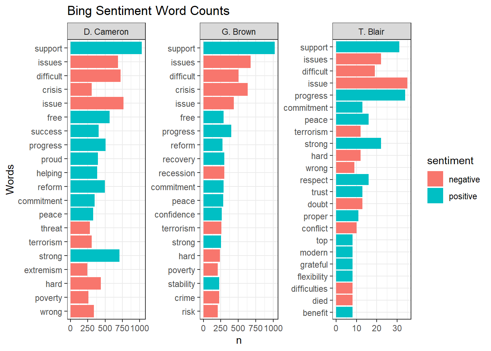

Sentiment analysis is the task of automatically classifying texts according to the emotions they express.
In the most simple scenario, we want to classify a text as positive, negative, or neutral. In more complex situations, we could identify specific emotions or compute the sentiment with respect to a specific entity.
library(tidyverse)## -- Attaching packages --------------------------------------- tidyverse 1.3.1 --## v ggplot2 3.3.5 v purrr 0.3.4
## v tibble 3.1.4 v dplyr 1.0.7
## v tidyr 1.1.3 v stringr 1.4.0
## v readr 2.0.1 v forcats 0.5.1## -- Conflicts ------------------------------------------ tidyverse_conflicts() --
## x dplyr::filter() masks stats::filter()
## x dplyr::lag() masks stats::lag()library(tidytext)# Read csv file and store it in a new variable called data
data <- read.csv("speeches_uk.csv")# Do some quick cleaning tasks
clean_data <- data %>%
select(-X) %>% #remove X column
mutate(date = as.Date(date,"%d-%m-%Y")) %>% #convert date variable to date type
mutate(country = as.factor(country)) %>% #convert country to factor
mutate(speaker = as.factor(speaker)) %>% #convert speaker to factor
mutate(text = str_replace_all(text,"<.*?>",""))%>% #remove all html tags
mutate(text = str_replace_all(text,"[^a-zA-Z0-9 -]",""))%>% #remove all non-alphanumeric characters
mutate(text = str_trim(text)) %>% #trim excess white spaces
mutate(text = tolower(text)) #covert all to lower case# Tokenize Clean data and remove stopwords
data("stop_words")
clean_tokenized_data <- clean_data %>%
unnest_tokens(word,text)%>%
anti_join(stop_words)## Joining, by = "word"A sentiment lexicon (i.e. dictionary) contains information about the emotions or polarity expressed by words, phrases, or concepts.
In practice, a dictionary usually provides one or more scores for each word. We can then use them to compute the overall sentiment of an input sentence based on individual words.
The tidytext package includes four distinct sentiment dictionaries that can be accessed with the get_sentiments() function. The only argument is the name of the dictionary.
# Pull and inspect the bing lexicon
get_sentiments("bing") %>%
count(sentiment)## # A tibble: 2 x 2
## sentiment n
## <chr> <int>
## 1 negative 4781
## 2 positive 2005# What are some of the positive and negative words?
sample_words_bing <- get_sentiments("bing") %>%
group_by(sentiment) %>%
slice_sample(n=10)get_sentiments("afinn") %>%
summarize(
minscore = min (value),
maxscore = max(value)
)## # A tibble: 1 x 2
## minscore maxscore
## <dbl> <dbl>
## 1 -5 5# What are some of the positive and negative words?
sample_words_afinn <- get_sentiments("afinn") %>%
group_by(value) %>%
slice_sample(n=5)get_sentiments("loughran") %>%
count(sentiment)## # A tibble: 6 x 2
## sentiment n
## <chr> <int>
## 1 constraining 184
## 2 litigious 904
## 3 negative 2355
## 4 positive 354
## 5 superfluous 56
## 6 uncertainty 297sample_words_loughran <- get_sentiments("loughran") %>%
group_by(sentiment) %>%
slice_sample(n=3)sentiment_counts <- get_sentiments("loughran") %>%
count(sentiment) %>%
mutate(sentiment2 = fct_reorder(sentiment,n))
ggplot(sentiment_counts, aes(x = sentiment2, y = n)) +
geom_col() +
coord_flip() +
labs(
title = "Sentiment Counts in Loughran",
x = "Counts",
y = "Sentiment")get_sentiments("nrc") %>%
count(sentiment) %>%
arrange(desc(n))## # A tibble: 10 x 2
## sentiment n
## <chr> <int>
## 1 negative 3318
## 2 positive 2308
## 3 fear 1474
## 4 anger 1246
## 5 trust 1230
## 6 sadness 1187
## 7 disgust 1056
## 8 anticipation 837
## 9 joy 687
## 10 surprise 532sample_words_NRC <- get_sentiments("nrc") %>%
group_by(sentiment) %>%
slice_sample(n=3)# Pull in the nrc dictionary, count the sentiments and reorder them by count
sentiment_counts_nrc<- get_sentiments("nrc") %>%
count(sentiment) %>%
mutate(sentiment2 = fct_reorder(sentiment, n))
# Visualize sentiment_counts using the new sentiment factor column
ggplot(sentiment_counts_nrc, aes(x=sentiment2, y=n)) +
geom_col() +
coord_flip() +
# Change the title to "Sentiment Counts in NRC", x-axis to "Sentiment", and y-axis to "Counts"
labs(
title = "Sentiment Counts in NRC",
x = "Sentiment",
y = "Counts"
)bing_sentiment <- clean_tokenized_data %>%
inner_join(get_sentiments("bing")) %>%
count(sentiment) %>%
arrange(desc(n))## Joining, by = "word"bing_top10 <- clean_tokenized_data %>%
inner_join(get_sentiments("bing")) %>%
count(word, sentiment) %>%
group_by(sentiment) %>%
top_n(10,n) %>%
ungroup() %>%
mutate(word2 = fct_reorder(word, n))## Joining, by = "word"ggplot(bing_top10, aes(x = word2, y = n, fill = sentiment)) +
geom_col(show.legend = FALSE) +
facet_wrap(~ sentiment, scales = "free") +
coord_flip() +
labs(title = "Bing Sentiment Word Counts",
x = "Words"
)Plot most used word by each speaker and corresponding sentiment.
bing_top10_speaker <- clean_tokenized_data %>%
inner_join(get_sentiments("bing")) %>%
count(word, sentiment, speaker) %>%
group_by(sentiment,speaker) %>%
top_n(10,n) %>%
ungroup() %>%
mutate(word2 = fct_reorder(word, n))## Joining, by = "word"ggplot(bing_top10_speaker, aes(x = word2, y = n, fill = sentiment)) +
geom_col() +
facet_wrap(vars(speaker), scales="free") +
coord_flip() +
labs(title = "Bing Sentiment Word Counts",
x = "Words"
)+
theme_bw() 
We can also plot overall sentiment (positive - negative) for each speaker.
sentiment_speaker <- clean_tokenized_data %>%
inner_join(get_sentiments("bing")) %>%
count(speaker,sentiment) %>%
spread(sentiment,n) %>%
mutate(overallsentiment = positive - negative)## Joining, by = "word"ggplot(sentiment_speaker, aes(x = speaker, y = overallsentiment, fill = as.factor(speaker))) +
geom_col(show.legend = FALSE) +
coord_flip() +
labs(title = "Overall Sentiment by Speakers",
subtitle = "UK Speeches",
x = "Speakers",
y = "Overall Sentiment")